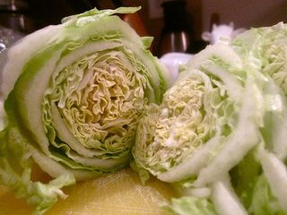
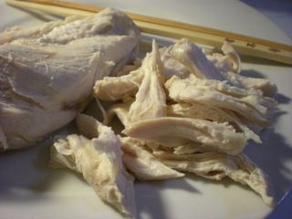
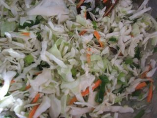

Шаг 1: отвариваем курицу.
В начале нам необходимо отварить куриную грудку. Для этого промываем курицу под прохладной проточной водой и обсушиваем бумажными кухонными полотенцами. Затем перекладываем ее на разделочную доску и с помощью ножа удаляем излишки жира и плевы. После этого, перекладываем обработанную куриную грудку в кастрюлю. Заливаем мясной ингредиент чистой водой, так чтобы она полностью закрывала курицу. Включаем температуру плиты на средний уровень и ставим на конфорку кастрюлю с куриной грудкой. В воду добавляем по вкусу соль. Далее, когда вода закипит, слегка сбавляем температуру плиты и варим в течении 25 - 30 минут. В процессе варки необходимо периодически убирать с поверхности жидкости образующуюся пену, с помощью столовой ложки или шумовки. По прошествии нужного времени достаем куриную грудку из воды и перекладываем в тарелку, чтобы она остыла, а пока займемся другими ингредиентами.
Шаг 2: готовим блины.
Яйца промываем под проточной водой от различного рода загрязнений, высушиваем бумажными кухонными полотенцами и разбиваем в глубокую емкость. С помощью венчика или обычной вилки взбиваем яйца до однородной консистенции. Далее добавляем к ним необходимое количество воды и муки. Смешиваем массу до однородности и можно приступать к обжарке. Включаем температуру плиты на средний уровень, ставим на конфорку сковороду и наливаем в нее немного растительного масла. После того, как жир нагреется выливаем в сковороду примерно половину яичной смеси. И с помощью кухонной лопатки обжариваем блинчик с двух сторон до образования золотисто-коричневой корочки. Таким же образом обжариваем второй блинчик и уже готовые перекладываем на разделочную доску. Ножом измельчаем яичные блинчики на соломку, такого размера, чтобы удобно было кушать. Измельченный ингредиент перекладываем в салатницу.
Шаг 3: измельчаем ингредиенты.

Начнем крошить ингредиенты с пекинской капусты. Овощ промываем под проточной водой, высушиваем бумажными кухонными полотенцами и выкладываем на разделочную доску. С помощью ножа нарезать капусту с верхушки поперек соломкой, отступая примерно 5 - 7 миллиметров. Измельченный ингредиент перекладываем в салатницу.

Далее возвращаемся к курице, она уже достаточно остыла и можно начать с ней работать. Если ваша куриная грудка с кожей, тогда ее необходимо удалить, также удаляем косточки, хрящик. После этого, чистое мясо нарезаем средней соломкой и также перекладываем в салатницу.
Затем достаем из холодильника ветчину, освобождаем ее от упаковки и перекладываем на разделочную доску. С помощью ножа также нарезаем ее средней соломкой и укладываем в салатницу.
Шаг 3: заправляем салат.

Добавляем к нашим измельченным ингредиентам готовую корейскую морковь. Затем, с помощью столовой ложки тщательно перемешиваем салат. После заправляем его майонезом по вкусу и можно подавать.